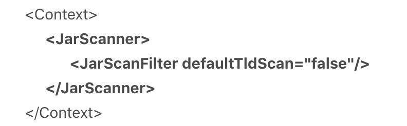
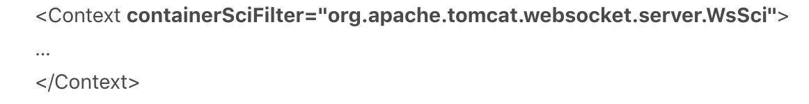
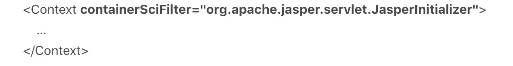
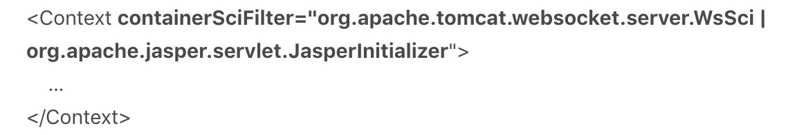
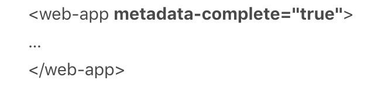
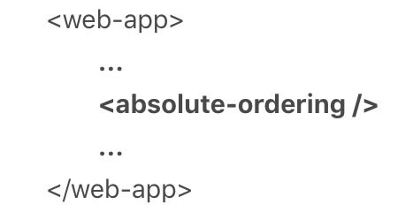
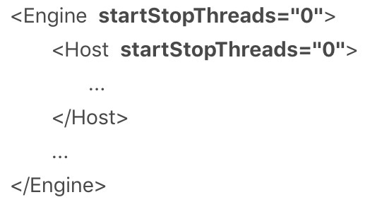

- 00 开篇词 Java程序员如何快速成长？.md
- 01 Web容器学习路径.md
- 02 HTTP协议必知必会.md
- 03 你应该知道的Servlet规范和Servlet容器.md
- 04 实战：纯手工打造和运行一个Servlet.md
- 05 Tomcat系统架构（上）： 连接器是如何设计的？.md
- 06 Tomcat系统架构（下）：聊聊多层容器的设计.md
- 07 Tomcat如何实现一键式启停？.md
- 08 Tomcat的“高层们”都负责做什么？.md
- 09 比较：Jetty架构特点之Connector组件.md
- 10 比较：Jetty架构特点之Handler组件.md
- 11 总结：从Tomcat和Jetty中提炼组件化设计规范.md
- 12 实战：优化并提高Tomcat启动速度.md
- 13 热点问题答疑（1）：如何学习源码？.md
- 14 NioEndpoint组件：Tomcat如何实现非阻塞I_O？.md
- 15 Nio2Endpoint组件：Tomcat如何实现异步I_O？.md
- 16 AprEndpoint组件：Tomcat APR提高I_O性能的秘密.md
- 17 Executor组件：Tomcat如何扩展Java线程池？.md
- 18 新特性：Tomcat如何支持WebSocket？.md
- 19 比较：Jetty的线程策略EatWhatYouKill.md
- 20 总结：Tomcat和Jetty中的对象池技术.md
- 21 总结：Tomcat和Jetty的高性能、高并发之道.md
- 22 热点问题答疑（2）：内核如何阻塞与唤醒进程？.md
- 23 Host容器：Tomcat如何实现热部署和热加载？.md
- 24 Context容器（上）：Tomcat如何打破双亲委托机制？.md
- 25 Context容器（中）：Tomcat如何隔离Web应用？.md
- 26 Context容器（下）：Tomcat如何实现Servlet规范？.md
- 27 新特性：Tomcat如何支持异步Servlet？.md
- 28 新特性：Spring Boot如何使用内嵌式的Tomcat和Jetty？.md
- 29 比较：Jetty如何实现具有上下文信息的责任链？.md
- 30 热点问题答疑（3）：Spring框架中的设计模式.md
- 31 Logger组件：Tomcat的日志框架及实战.md
- 32 Manager组件：Tomcat的Session管理机制解析.md
- 33 Cluster组件：Tomcat的集群通信原理.md
- 34 JVM GC原理及调优的基本思路.md
- 35 如何监控Tomcat的性能？.md
- 36 Tomcat I_O和线程池的并发调优.md
- 37 Tomcat内存溢出的原因分析及调优.md
- 38 Tomcat拒绝连接原因分析及网络优化.md
- 39 Tomcat进程占用CPU过高怎么办？.md
- 40 谈谈Jetty性能调优的思路.md
- 41 热点问题答疑（4）： Tomcat和Jetty有哪些不同？.md
- 特别放送 如何持续保持对学习的兴趣？.md
- 结束语 静下心来，品味经典.md
12 实战：优化并提高Tomcat启动速度
到目前为止，我们学习了Tomcat和Jetty的整体架构，还知道了Tomcat是如何启动起来的，今天我们来聊一个比较轻松的话题：如何优化并提高Tomcat的启动速度。
我们在使用Tomcat时可能会碰到启动比较慢的问题，比如我们的系统发布新版本上线时，可能需要重启服务，这个时候我们希望Tomcat能快速启动起来提供服务。其实关于如何让Tomcat启动变快，官方网站有专门的文章来介绍这个话题。下面我也针对Tomcat 8.5和9.0版本，给出几条非常明确的建议，可以现学现用。
清理你的Tomcat
1. 清理不必要的Web应用
首先我们要做的是删除掉webapps文件夹下不需要的工程，一般是host-manager、example、doc等这些默认的工程，可能还有以前添加的但现在用不着的工程，最好把这些全都删除掉。如果你看过Tomcat的启动日志，可以发现每次启动Tomcat，都会重新布署这些工程。
2. 清理XML配置文件
我们知道Tomcat在启动的时候会解析所有的XML配置文件，但XML解析的代价可不小，因此我们要尽量保持配置文件的简洁，需要解析的东西越少，速度自然就会越快。
3. 清理JAR文件
我们还可以删除所有不需要的JAR文件。JVM的类加载器在加载类时，需要查找每一个JAR文件，去找到所需要的类。如果删除了不需要的JAR文件，查找的速度就会快一些。这里请注意：Web应用中的lib目录下不应该出现Servlet API或者Tomcat自身的JAR，这些JAR由Tomcat负责提供。如果你是使用Maven来构建你的应用，对Servlet API的依赖应该指定为<scope>provided</scope>。
4. 清理其他文件
及时清理日志，删除logs文件夹下不需要的日志文件。同样还有work文件夹下的catalina文件夹，它其实是Tomcat把JSP转换为Class文件的工作目录。有时候我们也许会遇到修改了代码，重启了Tomcat，但是仍没效果，这时候便可以删除掉这个文件夹，Tomcat下次启动的时候会重新生成。
禁止Tomcat TLD扫描
Tomcat为了支持JSP，在应用启动的时候会扫描JAR包里面的TLD文件，加载里面定义的标签库，所以在Tomcat的启动日志里，你可能会碰到这种提示：
At least one JAR was scanned for TLDs yet contained no TLDs. Enable debug logging for this logger for a complete list of JARs that were scanned but no TLDs were found in them. Skipping unneeded JARs during scanning can improve startup time and JSP compilation time.
Tomcat的意思是，我扫描了你Web应用下的JAR包，发现JAR包里没有TLD文件。我建议配置一下Tomcat不要去扫描这些JAR包，这样可以提高Tomcat的启动速度，并节省JSP编译时间。
那如何配置不去扫描这些JAR包呢，这里分两种情况：
- 如果你的项目没有使用JSP作为Web页面模板，而是使用Velocity之类的模板引擎，你完全可以把TLD扫描禁止掉。方法是，找到Tomcat的
conf/目录下的context.xml文件，在这个文件里Context标签下，加上JarScanner和JarScanFilter子标签，像下面这样。

- 如果你的项目使用了JSP作为Web页面模块，意味着TLD扫描无法避免，但是我们可以通过配置来告诉Tomcat，只扫描那些包含TLD文件的JAR包。方法是，找到Tomcat的
conf/目录下的catalina.properties文件，在这个文件里的jarsToSkip配置项中，加上你的JAR包。
tomcat.util.scan.StandardJarScanFilter.jarsToSkip=xxx.jar
关闭WebSocket支持
Tomcat会扫描WebSocket注解的API实现，比如@ServerEndpoint注解的类。我们知道，注解扫描一般是比较慢的，如果不需要使用WebSocket就可以关闭它。具体方法是，找到Tomcat的conf/目录下的context.xml文件，给Context标签加一个containerSciFilter的属性，像下面这样。

更进一步，如果你不需要WebSocket这个功能，你可以把Tomcat lib目录下的websocket-api.jar和tomcat-websocket.jar这两个JAR文件删除掉，进一步提高性能。
关闭JSP支持
跟关闭WebSocket一样，如果你不需要使用JSP，可以通过类似方法关闭JSP功能，像下面这样。

我们发现关闭JSP用的也是containerSciFilter属性，如果你想把WebSocket和JSP都关闭，那就这样配置：

禁止Servlet注解扫描
Servlet 3.0引入了注解Servlet，Tomcat为了支持这个特性，会在Web应用启动时扫描你的类文件，因此如果你没有使用Servlet注解这个功能，可以告诉Tomcat不要去扫描Servlet注解。具体配置方法是，在你的Web应用的web.xml文件中，设置<web-app>元素的属性metadata-complete="true"，像下面这样。

metadata-complete的意思是，web.xml里配置的Servlet是完整的，不需要再去库类中找Servlet的定义。
配置Web-Fragment扫描
Servlet 3.0还引入了“Web模块部署描述符片段”的web-fragment.xml，这是一个部署描述文件，可以完成web.xml的配置功能。而这个web-fragment.xml文件必须存放在JAR文件的META-INF目录下，而JAR包通常放在WEB-INF/lib目录下，因此Tomcat需要对JAR文件进行扫描才能支持这个功能。
你可以通过配置web.xml里面的<absolute-ordering>元素直接指定了哪些JAR包需要扫描web fragment，如果<absolute-ordering/>元素是空的， 则表示不需要扫描，像下面这样。

随机数熵源优化
这是一个比较有名的问题。Tomcat 7以上的版本依赖Java的SecureRandom类来生成随机数，比如Session ID。而JVM 默认使用阻塞式熵源（/dev/random）， 在某些情况下就会导致Tomcat启动变慢。当阻塞时间较长时， 你会看到这样一条警告日志：
<DATE>org.apache.catalina.util.SessionIdGenerator createSecureRandom- INFO: Creation of SecureRandom instance for session ID generation using [SHA1PRNG] took [8152] milliseconds.
这其中的原理我就不展开了，你可以阅读资料获得更多信息。解决方案是通过设置，让JVM使用非阻塞式的熵源。
我们可以设置JVM的参数：
-Djava.security.egd=file:/dev/./urandom
或者是设置java.security文件，位于$JAVA_HOME/jre/lib/security目录之下： securerandom.source=file:/dev/./urandom
这里请你注意，/dev/./urandom中间有个./的原因是Oracle JRE中的Bug，Java 8里面的 SecureRandom类已经修正这个Bug。 阻塞式的熵源（/dev/random）安全性较高， 非阻塞式的熵源（/dev/./urandom）安全性会低一些，因为如果你对随机数的要求比较高， 可以考虑使用硬件方式生成熵源。
并行启动多个Web应用
Tomcat启动的时候，默认情况下Web应用都是一个一个启动的，等所有Web应用全部启动完成，Tomcat才算启动完毕。如果在一个Tomcat下你有多个Web应用，为了优化启动速度，你可以配置多个应用程序并行启动，可以通过修改server.xml中Host元素的startStopThreads属性来完成。startStopThreads的值表示你想用多少个线程来启动你的Web应用，如果设成0表示你要并行启动Web应用，像下面这样的配置。

这里需要注意的是，Engine元素里也配置了这个参数，这意味着如果你的Tomcat配置了多个Host（虚拟主机），Tomcat会以并行的方式启动多个Host。
本期精华
今天我讲了不少提高优化Tomcat启动速度的小贴士，现在你就可以把它们用在项目中了。不管是在开发环境还是生产环境，你都可以打开Tomcat的启动日志，看看目前你们的应用启动需要多长时间，然后尝试去调优，再看看Tomcat的启动速度快了多少。
如果你是用嵌入式的方式运行Tomcat，比如Spring Boot，你也可以通过Spring Boot的方式去修改Tomcat的参数，调优的原理都是一样的。
课后思考
在Tomcat启动速度优化上，你都遇到了哪些问题，或者你还有自己的“独门秘籍”，欢迎把它们分享给我和其他同学。
不知道今天的内容你消化得如何？如果还有疑问，请大胆的在留言区提问，也欢迎你把你的课后思考和心得记录下来，与我和其他同学一起讨论。如果你觉得今天有所收获，欢迎你把它分享给你的朋友。
© 2019 - 2023 Liangliang Lee. Powered by gin and hexo-theme-book.